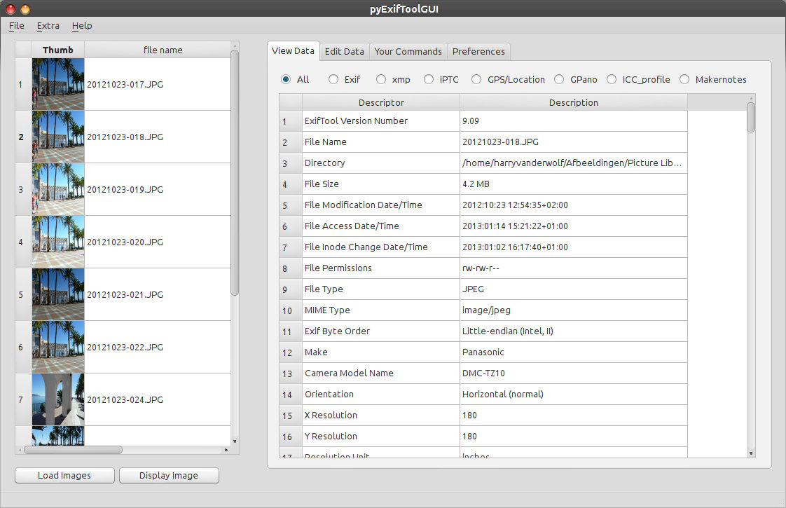

pyExifToolGUI
pyExifToolGui is a graphical frontend for the excellent open source command line tool ExifTool by Phil Harvey. pyExifToolGui is a python pySide QT4 script program that reads and writes all kind of metadata tags from/to image files. A strong point of this software is the ability to write the data, copied or not from a source image (reference image), to multiple images at once. My main goal was a tool to write gps data to my images as I photograph a lot inside buildings like Churches/Cathedrals and Musea (when allowed), which means that the gps functionality of my camera doesn't function. And sometimes you have already made 20 photos while your GPS is still not up-to-date or uses settings from your previous location. Next to the gps functionality, I also wanted extensive renaming functionality, based on metadata in the images, to be part of this programs functionality. It is also one of the first applications to support Googles new PhotoSphere options for panoramic images. pyExifToolGUI will slowly grow into a general exiftool Gui and will also write other tags to your images.  As mentioned: pyExifToolGui is a graphical frontend for the excellent open source command line tool ExifTool by Phil Harvey, but pyExifToolGui is not a complete ExifTool Gui, far from that. Features
Downloads
exiftool is not included in any of the packages. Download it from Phil Harvey's exiftool site.
The downloads contain an INSTALLATION.txt, but you can also read the installation chapter of the manual (which is also included in the program, but that's after installation). Note that the Linux version can also be used on Mac OS X (again: read the manual). "Things to Do"Planned for next version:lens tab: In case you use an "old" lens (with or without adapter) which isn't recognised by your camera body resulting in missing exif data for this lens, you can add this exif lens data. (Same for a tele/macro converter attached to your lens which isn't recognised.) QuirksLinux: The program is not yet packaged for any distribution. Use the install_remove.py script to install. Windows: Very first program start takes very long. Rename your downloaded exiftool(-k).exe to exiftool.exe (if you only see exiftool(-k) in your explorer, rename to exiftool and don't add an extension). Mac OS X: Sometimes the pyexiftoolgui.app crashes on first start. This only occurs with the full bundle. General:
This program is completely free, but you can donate any amount to me to show your appreciation. See the Help menu in the program or the donate button below.
| ||||||||||||||||||||||||||||||||||||||||||

{kind=link}
{kind=link}